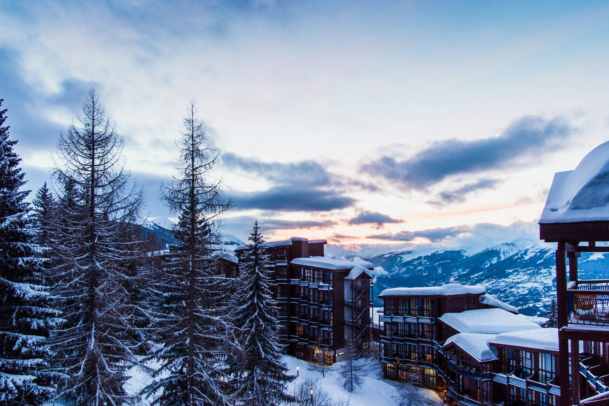

Vacances de février 2027 : les dates par zone et où partir
Du 6 février au 8 mars 2027, les trois zones partent l’une après l’autre. Voici quelle semaine choisir pour le ski ou pour le soleil de la Côte d’Azur.
Photo : Tomas Yates / Unsplash
Les vacances d’hiver 2027 durent deux semaines dans chaque zone et s’étalent sur un mois. La zone C part la première, la zone B la dernière. Les vacances commencent le samedi après la classe et la reprise a lieu le lundi matin.
Les dates par zone
| Zone | Départ | Reprise |
|---|---|---|
| Zone C Paris, Créteil, Versailles, Montpellier, Toulouse | samedi 6 février 2027 | lundi 22 février 2027 |
| Zone A Lyon, Grenoble, Bordeaux, Clermont-Ferrand, Dijon, Besançon, Limoges, Poitiers | samedi 13 février 2027 | lundi 1er mars 2027 |
| Zone B Aix-Marseille, Nice, Lille, Nantes, Rennes, Strasbourg, Normandie, Nancy-Metz, Orléans-Tours, Reims, Amiens | samedi 20 février 2027 | lundi 8 mars 2027 |
La Corse suit le calendrier de la zone A.
La semaine la plus chargée
Du 13 au 22 février 2027, les zones C et A sont en vacances en même temps : c’est la période la plus chère et la plus fréquentée dans les stations de ski, avec les bouchons du samedi sur les routes des Alpes. Si vous avez le choix, visez la première semaine de la zone C (6 au 13 février) ou la dernière semaine de la zone B (27 février au 8 mars).
Où partir au ski
Toutes les stations sont ouvertes en février. Pour comparer les prix des forfaits, voir notre comparatif 2026-2027 : de 44 € la journée à Isola 2000 ou Auron à 84,20 € dans les 3 Vallées. Les Pyrénées, entre 46 € et 55 €, sont souvent moins chargées que les grandes stations de Savoie.
Ou le soleil de la Côte d’Azur
Février est le mois des grandes fêtes de la Riviera : le Carnaval de Nice, la Fête du Citron de Menton du 13 au 28 février 2027, et la Fête du Mimosa de Mandelieu du 10 au 14 février. La zone A, en vacances du 13 février au 1er mars, peut tout voir.
Pour préparer le séjour


Activités à réserver
Cours de ski en station ou places en tribune au Carnaval de Nice : à réserver avant février.
-
Cours de ski et activités dans les Alpes
Moniteurs, sorties hors-piste et raquettes.
-
Visites guidées de Nice
Le Vieux Nice, la colline du Château et la promenade des Anglais à pied.
Liens partenaires.
Et pour le reste de l’année, voir aussi où partir en France en 2027, mois par mois.
Pour un week-end à deux le 13 et 14 février, voir aussi nos idées pour la Saint-Valentin 2027.
Questions fréquentes
Quelles sont les dates des vacances de février 2027 ?
Zone C : du 6 au 22 février 2027. Zone A : du 13 février au 1er mars 2027. Zone B : du 20 février au 8 mars 2027.
Quelle zone part en premier en février 2027 ?
La zone C (Paris, Créteil, Versailles, Montpellier, Toulouse), dès le samedi 6 février 2027.
Quelle est la semaine la plus chargée au ski en février 2027 ?
Du 13 au 22 février 2027, quand les zones C et A sont en vacances en même temps.